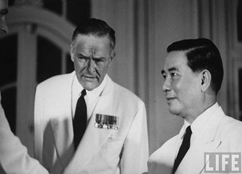

Đại Sứ Henry Cabot Lodge sinh ngày 5 tháng 7 năm 1902, tại Nahant Massachusetts. Tốt nghiệp Đại Học Trường Harvard. Năm 1924 cộng tác với các báo The Boston Transcrip và The New York Herald Tribune.
Đắc cử hai nhiệm kỳ tại Cơ Quan Lập Pháp Massachusetts. Năm 1933-1936 đánh bại James M. Curley vào Thượng Viện Hoa Kỳ. Đã từng phục vụ ở Lục Quân trong Thế Chiến Thứ 2. Tái đắc cử Thượng Viện và lại từ chức khỏi Thượng Viện để trở lại Lục Quân. Được ân thưởng huy chương Bronze star (sao đồng), Croix de Guerre (Pháp) cùng các huy chương khác. Sau đó lại đắc cử vào Thượng Viện năm 1946. Ông ta có ảnh hưởng lớn trong việc thuyết phục Tướng Eisenhower ra ứng cử Tổng Thống và đứng ra làm Giám Đốc tranh cử cho ông này.
Mất ghế Thượng Viện năm 1950 vào tay John F. Kennedy. Năm 1953 Đại Sứ Mỹ tại Liên Hiệp Quốc. Năm 1960 ứng cử viên Tổng Thống của Đảng Cộng Hòa. Đại Sứ tại Nam Việt Nam vào tháng 8 năm 1963 đến tháng 7 năm 1964. Rồi trở lại xứ này tái giữ chức Đại Sứ từ tháng 8 năm 1965 đến 1967.
Đại Sứ lưu động của Hoa Kỳ 1967-1968. Đại Sứ tại Cộng Hòa Liên Bang Đức 1968-1969. Trưởng Phái Đoàn Thương Thuyết tại Hội Đàm Ba Lê về Việt Nam từ tháng giêng đến tháng chạp 1969.
Hiện nay (1971) là Đặc Sứ của Tổng Thống Nixon tại Tòa Thánh Vatican.
(Theo tài liệu mật Ngũ Giác Đài)

.Đại Sứ Henry Cabot Lodge
ĐỒNG NAI XUẤT BẢN, TỔNG PHÁT HÀNH SÁCH BÁO TÒAN QUỐC
270 Đường Đề Thám 270 Sài Gòn
CÔNG DÂN ÁO GẤM, In tại Nhà In NẮNG MỚI, 45 Bùi Viện, Sài Gòn,
ĐT 20050, Giấy Phép xuất bản số 2822 BTT-PHNT ngày 20.6.1971
.